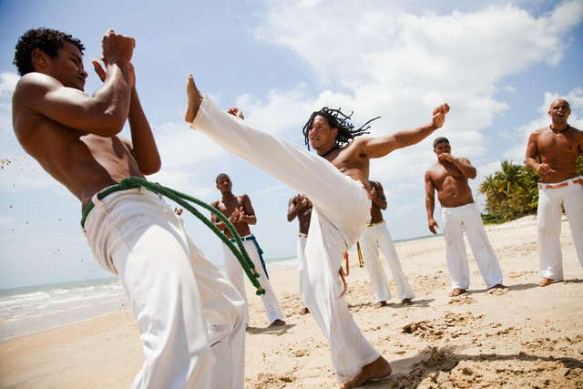

Capoeira
A capoeira é uma expressão cultural brasileira que compreende os elementos: arte-marcial, esporte, cultura popular, dança e música. Ela constrói relações de sociabilidade e familiaridade entre mestres e discípulos, sendo difundida de modo oral e gestual nas ruas e academias. A capoeira foi criada no século XVII pelo povo escravizado da etnia banto e se difundiu por todo o Brasil. Hoje é considerada um dos maiores símbolos da cultura brasileira.
Capoeira
Este estilo de luta carrega o sangue da história do Brasil, é belo e altamente praticado até os dias de hoje. Uma arte marcial rica em chutes, agilidade e significado, além da popularidade tanto dentro quanto fora do Brasil.
História
Negros lutando (1824), de Augustus Earle. Aquarela (Fonte: Wikimedia Commons)
A capoeira surgiu como resposta a violência a qual os escravizados eram submetidos em tempos coloniais e imperiais no Brasil. A partir de golpes e movimentos corporais ágeis, a luta permitia que eles se defendessem das brutais perseguições dos capitães do mato, cuja atribuição era capturar quem havia fugido.
Para não levantarem suspeitas – os senhores de engenho proibiam que praticassem qualquer tipo de esporte – os capoeiristas adaptaram os movimentos e adicionaram elementos coreográficos e musicais, camuflando seu verdadeiro significado. Após a abolição da escravatura, a prática continuou sendo vista como subversiva e apenas em 1937 deixou de ser considerada criminosa pelo Código Penal brasileiro.
Acredita-se que a origem do nome capoeira tenha relação aos locais onde o esporte era praticado: em campos abertos e sem vegetação. Esta técnica era também uma forma de preservar a cultura de origem e desenvolver laços entre os praticantes.
Hoje, a capoeira é considerada umas das maiores manifestações culturais brasileiras e é reconhecida mundialmente como prática que une o esporte e a arte. A música é um dos elementos que distingue esta modalidade de outras lutas. Inclusive, é essencial para que o praticante seja considerado um capoeirista completo. Além dos movimentos corporais, os praticantes devem também saber tocar instrumentos de origem afro-brasileira como o atabaque, o agogô e o berimbau. Este último é o principal dos instrumentos e também o mais famoso e mundialmente associado à capoeira. Existem ainda diferentes maneiras de toques, como o "toque de cavalaria", que era utilizado para avisar aos capoeiristas que a polícia estava se aproximando.